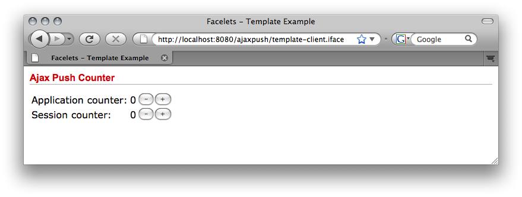
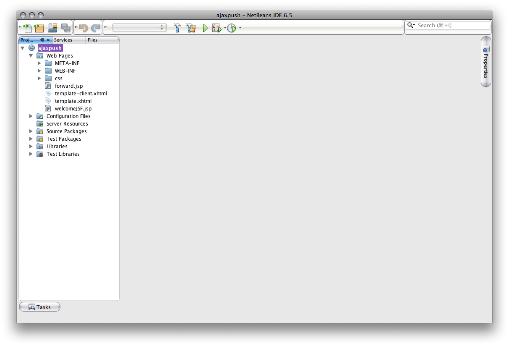
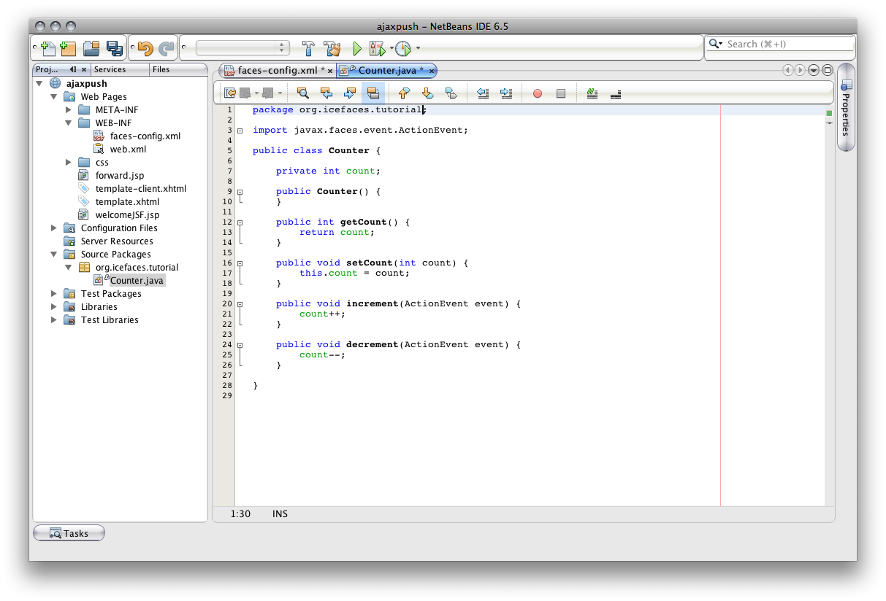
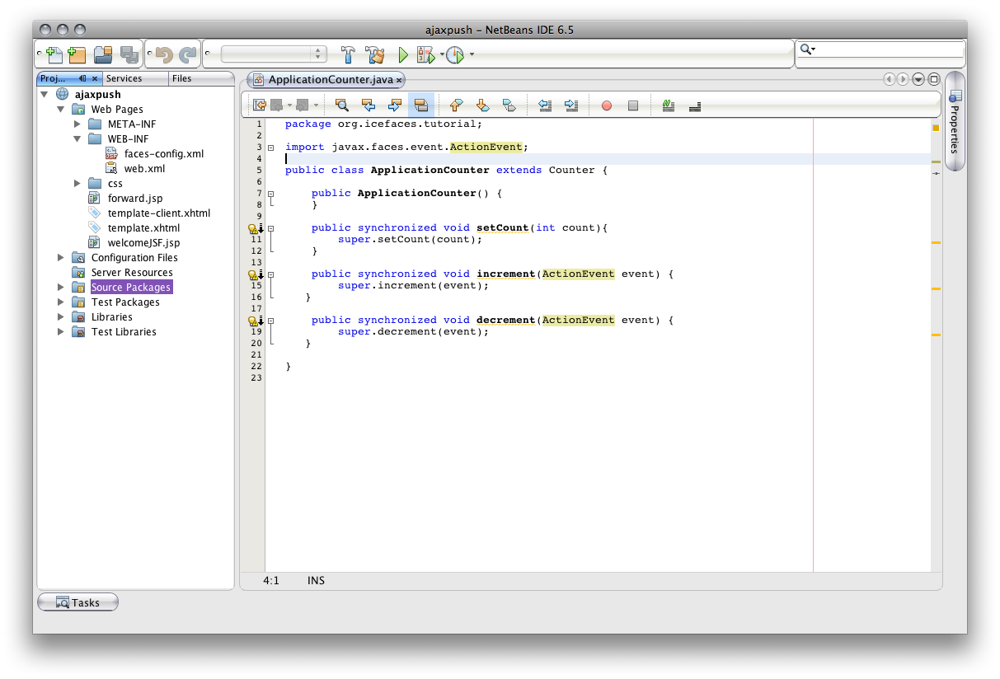
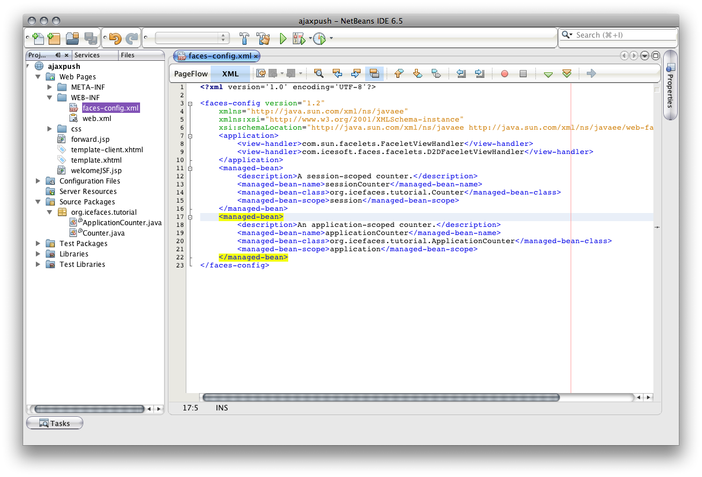
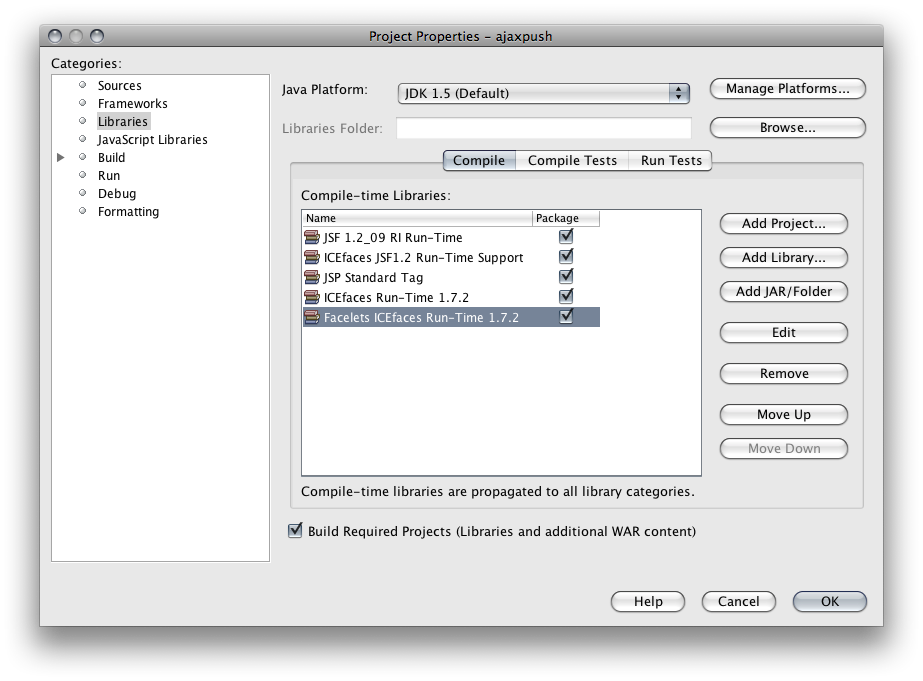
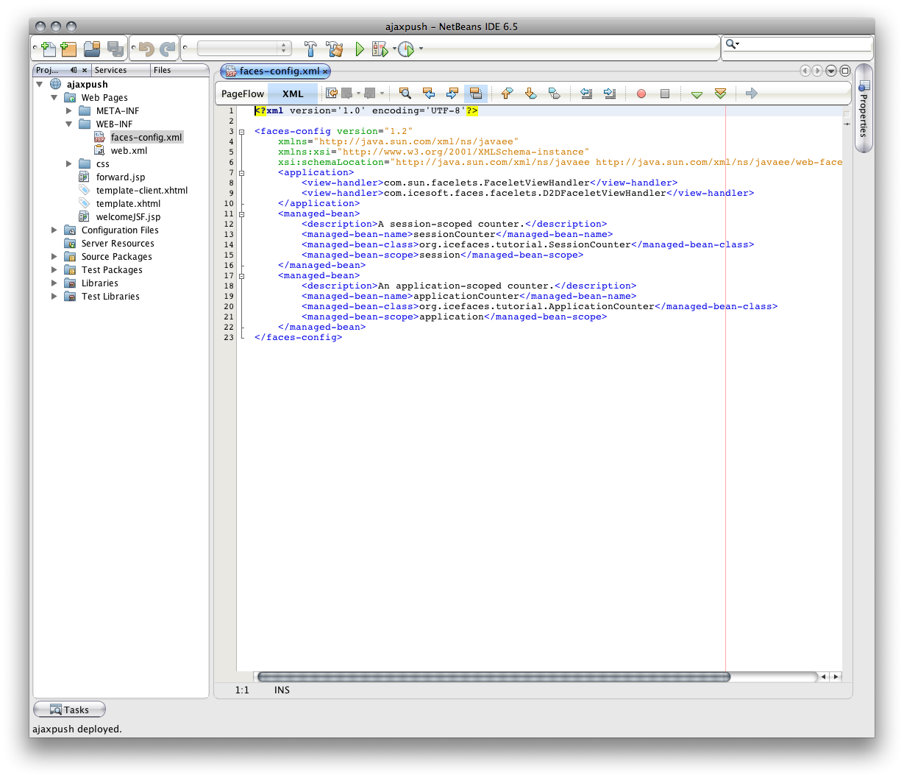
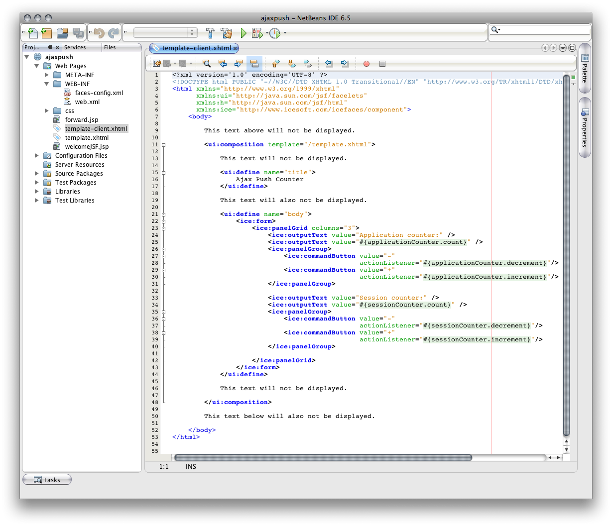
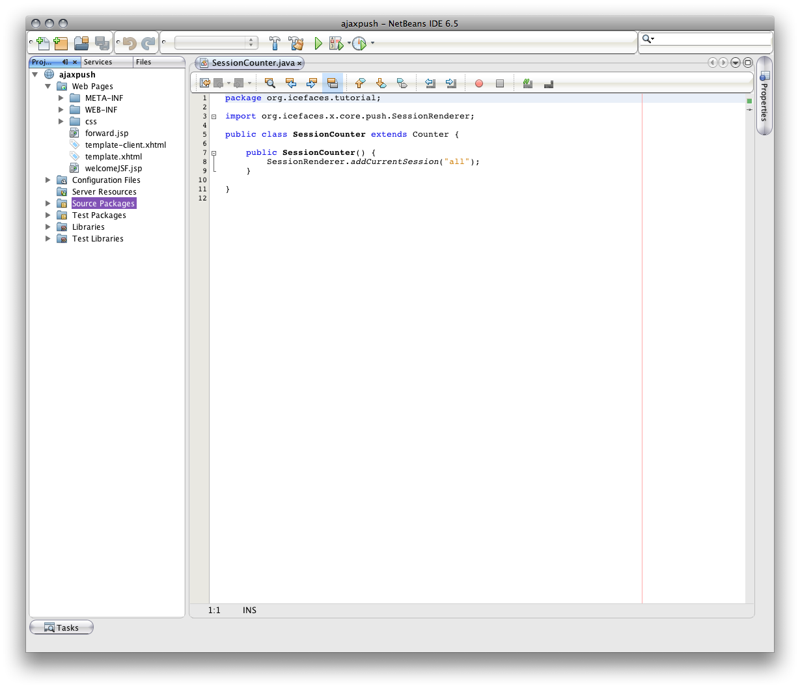
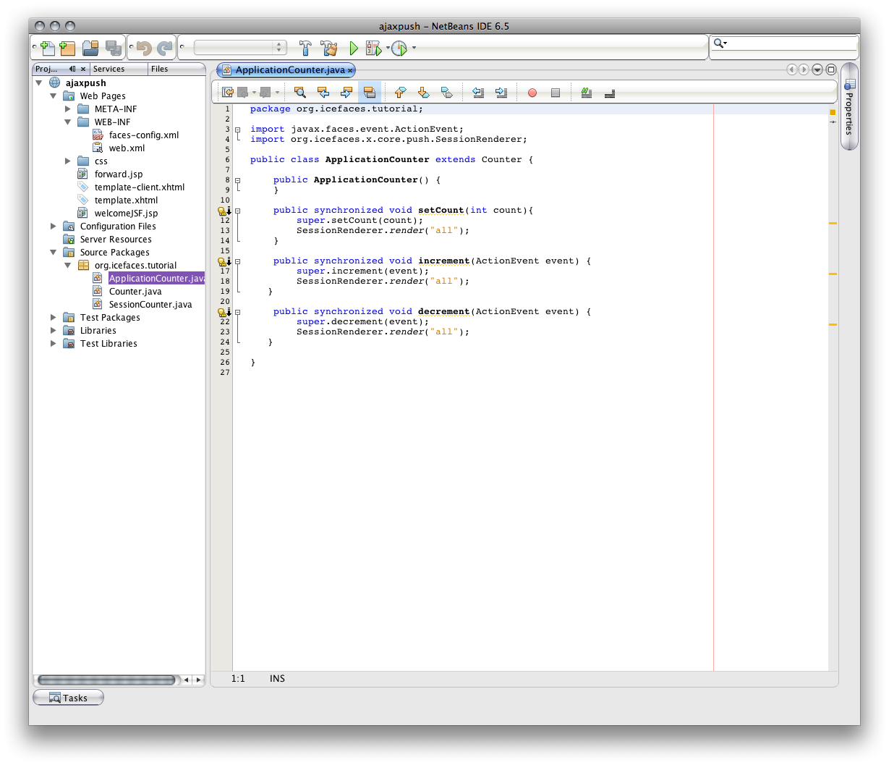

The ICEfaces Tutorial
Table of Contents
Lesson:Easy Ajax Push
The essence of Ajax Push is the ability to trigger updates to the client from events or changes that occur on the server. This makes Ajax Push highly suitable for collaborative applications where one user does something that changes the current state of the application and other users are interested in seeing that change. There are many different ways to take advantage of Ajax Push to add collaborative features to your rich web application. From the developer's perspective, Ajax Push is exposed through the SessionRenderer API. This tutorial is designed to provide a simple and clear illustration of how to get started with the SessionRenderer API to add Ajax Push to your application.
The project we are going to build in this tutorial is a page that contains simple, adjustable counters. The counter values are displayed on the page and buttons are provided that can be used to increment or decrement the counter values. The finished project looks like this:
The application consists of two counters. One is an application-scoped counter that can be adjusted and seen by all users. The second counter is session-scoped so changes to the value of this counter are restricted to the individual user. The goal is use the SessionRenderer API so that any modifications to the application-scoped counter result in Ajax Push updates being sent to all application users.
This tutorial will discuss the following topics:
You can develop ICEfaces applications using the tools of your choice. To make life a bit easier, ICEsoft also provides project integration plugins for a number of popular IDEs.
http://www.icefaces.org/main/downloads/os-downloads.ifaceFor this tutorial, we'll be demonstrating how to build the application using NetBeans 6.5. We've installed the ICEfaces Project Integration plugin for NetBeans 6.5 which is available from the site listed above. We'll also be developing using Facelets so we recommend that you use the NetBeans Plugins manager to download and install the Facelets Support plugin.
The code in this tutorial is designed to run compatibly on JDK 1.4. so we have purposely avoided the use of annotations, concurrency utilities, etc.
With NetBeans running and the appropriate plugins intalled, you are ready to create a new ICEfaces project:
The first step is to choose the appropriate project type:
Then select an appropriate name and location for the project:
Select the application server and related settings:
For our test application, we want the ICEfaces and Facelets framework support:
If you'd like to design your project visually, you can choose Visual Web ICEfaces instead. As we don't really have a complex visual requirement and we are focusing on Ajax Push, the ICEfaces framework is suitable for this tutorial.
Once you've completed the project wizard, you should have an initial project in NetBeans that looks like this:
Our first task is to create the backing beans that will be used to hold the state of the counters. First we'll start with a generic counter:
First we create a class file for our Counter:
Now we are going to provide the logic of our Counter bean. We'll use a simple integer member variable as the current counter value, provide getter and setter methods for the value, and also add a couple of methods for incrementing and decrementing the value. The methods will be used as JSF actionListeners so they need to take an ActionEvent as a parameter.
You can type or copy the following into the editing tab for the Counter.java file::
package org.icefaces.tutorial;
import javax.faces.event.ActionEvent;
public class Counter {
private int count;
public Counter() {
}
public int getCount() {
return count;
}
public void setCount(int count) {
this.count = count;
}
public void increment(ActionEvent event) {
count++;
}
public void decrement(ActionEvent event) {
count--;
}
}
Your project should now look something like this:
Since multiple users can potentially access and modify the value of our application-scoped counter, we need to create a version that guards against concurrent access. So we'll create an ApplicationCounter that extends our basic Counter:
You can type or copy the following into the editing tab for the Counter.java file::
package org.icefaces.tutorial;
import javax.faces.event.ActionEvent;
public class ApplicationCounter extends Counter {
public ApplicationCounter() {
}
public synchronized void setCount(int count){
super.setCount(count);
}
public synchronized void increment(ActionEvent event) {
super.increment(event);
}
public synchronized void decrement(ActionEvent event) {
super.decrement(event);
}
}
Your project should now look something like this:
To make use of our classes as JSF managed beans, we need to declare them in our faces-config.xml file:
To create the session-scoped bean:
To create the application-scoped bean:
The faces-config.xml file should now look something like this:
Now we need to create our user interface that we can bind our bean values and methods to. When the project was automatically created, the ICEfaces pluging created a couple of JSP files for us (forward.jsp and welcomeJSF.jsp). By adding the Facelets Support plugin, it created a couple of starting facelets pages (template.xhtml and template-client.xhtml). For this tutorial, we're going to use Facelets so we'll be concentrating on the .xhtml resources.
With Facelets, the typical approach is to create a template (template.xhtml) that can be used to dynamically include content. Since this isn't designed to be a tutorial on Facelets, we'll simply describe the minium steps required to get our counters up and running.
To use Facelets with ICEfaces, there are a couple of configuration settings that we need to apply. ICEfaces uses it's own copy of the Facelets library which is included as part of the ICEfaces integration plugin. To ensure that the library is applied to the project:
If the "Facelets ICEfaces Run-Time 1.7.2" libray is already in the list of compile-time libraries, the project is correctly configured. If it's not in the list:
In either case, the complete set of libraries should look something like this:
When using Facelets with ICEfaces, the ICEfaces framework uses a custom JSF ViewHandler implementation. This must be specified in the faces-config.xml file:
<application>
<view-handler>com.icesoft.faces.facelets.D2DFaceletViewHandler</view-handler>
</application>
When you are done, the faces-config.xml file should look something like this. Note that it's possible for more than one ViewHandler to be configured. They are designed to delegate responsibilities appropriately.
By including the Facelets framework plugin when the project was initially created, two Facelet files are automatically created for you. We'll edit those files now:
<html xmlns="http://www.w3.org/1999/xhtml"
xmlns:ui="http://java.sun.com/jsf/facelets"
xmlns:h="http://java.sun.com/jsf/html"
xmlns:ice="http://www.icesoft.com/icefaces/component">
<ui:define name="title">
Facelets
</ui:define>
to
<ui:define name="title">
Ajax Push Counter
</ui:define>
<ui:define name="body">
Hello from the Facelets client template!
</ui:define>
to
<ui:define name="body">
<ice:form>
<ice:panelGrid columns="3">
<ice:outputText value="Application counter:" />
<ice:outputText value="#{applicationCounter.count}" />
<ice:panelGroup>
<ice:commandButton value="-"
actionListener="#{applicationCounter.decrement}"/>
<ice:commandButton value="+"
actionListener="#{applicationCounter.increment}"/>
</ice:panelGroup>
<ice:outputText value="Session counter:" />
<ice:outputText value="#{sessionCounter.count}" />
<ice:panelGroup>
<ice:commandButton value="-"
actionListener="#{sessionCounter.decrement}"/>
<ice:commandButton value="+"
actionListener="#{sessionCounter.increment}"/>
</ice:panelGroup>
</ice:panelGrid>
</ice:form>
</ui:define>
The body content now provides a number of JSF components including a form, a panelGrid (for layout), outputText for showing the values of our counters, and commandButtons for modifying the values of the counters. The values and methods use the JSF expression language to bind to the backing beans we described in our faces-config.xml.
Before running the application, you should ensure that the default URL that NetBeans attempts to use for launching your browser is correct. By default, the ICEfaces project attempts to use the JSP page via the ICEfaces extension (welcomeJSF.iface). You should change this to use the default facelets page with the proper extension (template-client.iface).
If the tutorial is your main (or only) NetBeans project, then you should be able to Run Main Project, using either the green arrow button in the toolbar, the F6 key, or choosing Run -> Run Main Project from the menu. Your browser should automatically launch using the following URL:
http://localhost:8080/ajaxpush/template-client.ifaceAnd the application should look something like this:
Clicking the buttons allows you to increment and decrement the counter values. Opening a second browser shows the the application counter is shared, but the session counters are not. There are two very important things to note at this point:
There are basically two parts to using the SessionRenderer API.
The SessionRenderer API supports this in a simple and straight-forward manner.
public static void addCurrentSession(final String groupName)
public static void removeCurrentSession(final String groupName)
public static void render(final String groupName)
Since we want everyone to be able to access the application-scoped counter, we're going to keep it simple and just add everyone to a single, global group. The easiest way to do this is to have the group membership logic in the constructor of the session-scoped bean. That way, when our session-scoped bean is created, it's added to a group.
Since we only want to do this for our session-scoped counter, and not our application-scoped counter, we'll create another subclass of Counter that does this for us.
The only thing we want to do differently in this counter is add the current session to our group. You can type or copy the following into the editing tab for the Counter.java file:
package org.icefaces.tutorial;
import org.icefaces.x.core.push.SessionRenderer;
public class SessionCounter extends Counter {
public SessionCounter() {
SessionRenderer.addCurrentSession("all");
}
}
Your project should now look something like this:
For ICEfaces 1.7.1 and 1.7.2, the SessionRenderer API was considered experimental so the package for it reflects this (org.icefaces.x.core.push.SessionRenderer). For ICEfaces 1.8, the API is no longer considered experimental and resides with the rest of the Ajax Push APIs under com.icesoft.faces.async.render.
Now that we have a new bean implementation for our session-scoped counter, we need to update the JSF descriptor to make use of it.
<managed-bean> <description>A session-scoped counter.</description> <managed-bean-name>sessionCounter</managed-bean-name> <managed-bean-class>org.icefaces.tutorial.Counter</managed-bean-class> <managed-bean-scope>session</managed-bean-scope> </managed-bean>
becomes
<managed-bean> <description>A session-scoped counter.</description> <managed-bean-name>sessionCounter</managed-bean-name> <managed-bean-class>org.icefaces.tutorial.SessionCounter</managed-bean-class> <managed-bean-scope>session</managed-bean-scope> </managed-bean>
Your faces-config.xml file should now read like this:
Our final step in adding Ajax Push features to our application counter requires modifications to the ApplicationCounter class. What we want is for updates to be pushed out whenever there is a change. To do this, you simply need to call the render method of the SessionRenderer when a notable change occurs.
public static void render(final String groupName)
package org.icefaces.tutorial;
import javax.faces.event.ActionEvent;
import org.icefaces.x.core.push.SessionRenderer;
public class ApplicationCounter extends Counter {
public ApplicationCounter() {
}
public synchronized void setCount(int count){
super.setCount(count);
SessionRenderer.render("all");
}
public synchronized void increment(ActionEvent event) {
super.increment(event);
SessionRenderer.render("all");
}
public synchronized void decrement(ActionEvent event) {
super.decrement(event);
SessionRenderer.render("all");
}
}

So whenever a change is made to the application-scoped counter, we issue a request for a render to the group "all" which, in our case, means every active session.
Now if you run the main project (using either the green arrow button in the toolbar, the F6 key, or choosing Run -> Run Main Project from the menu) and point two browsers at the application:
http://localhost:8080/ajaxpush/template-client.ifaceClicking the buttons for the application-scoped counter should provide a richer experience. Updates from interaction in one browser that result in a change to the application counter are now pushed out to other active users. And there you have it. Using the SessionRenderer API is an easy and straightforward way to add collaborative features to your ICEfaces applications.
Copyright 2006 ICEsoft Technologies Inc. All rights reserved.